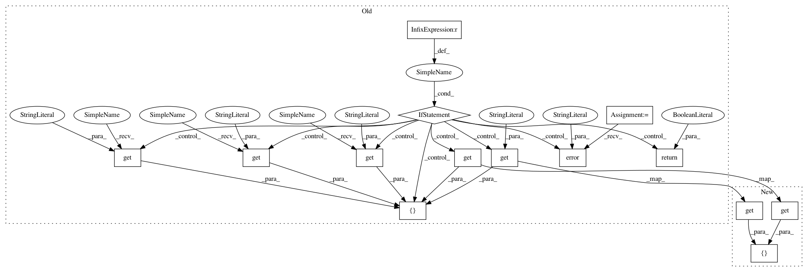

c8df06bb9f1bddec6022b56d99e8768a5bb98a00,homeassistant/components/lock/mqtt.py,,setup_platform,#Any#Any#Any#Any#,27
Before Change
// pylint: disable=unused-argument
def setup_platform(hass, config, add_devices_callback, discovery_info=None):
Setup the MQTT lock.
if config.get("command_topic") is None:
_LOGGER.error("Missing required variable: command_topic")
return False
add_devices_callback([MqttLock(
hass,
config.get("name", DEFAULT_NAME),
config.get("state_topic"),
config.get("command_topic"),
config.get("qos", DEFAULT_QOS),
config.get("retain", DEFAULT_RETAIN),
config.get("payload_lock", DEFAULT_PAYLOAD_LOCK),
config.get("payload_unlock", DEFAULT_PAYLOAD_UNLOCK),
config.get("optimistic", DEFAULT_OPTIMISTIC),
config.get(CONF_VALUE_TEMPLATE))])
// pylint: disable=too-many-arguments, too-many-instance-attributes
After Change
// pylint: disable=unused-argument
def setup_platform(hass, config, add_devices_callback, discovery_info=None):
Setup the MQTT lock.
add_devices_callback([MqttLock(
hass,
config[CONF_NAME],
config.get(CONF_STATE_TOPIC),
config[CONF_COMMAND_TOPIC],
config[mqtt.CONF_QOS],
config[CONF_RETAIN],
config[CONF_PAYLOAD_LOCK],
config[CONF_PAYLOAD_UNLOCK],
config[CONF_OPTIMISTIC],
config.get(CONF_VALUE_TEMPLATE))])
// pylint: disable=too-many-arguments, too-many-instance-attributes
In pattern: SUPERPATTERN
Frequency: 3
Non-data size: 14
Instances
Project Name: home-assistant/home-assistant
Commit Name: c8df06bb9f1bddec6022b56d99e8768a5bb98a00
Time: 2016-04-06
Author: jaharkes@cs.cmu.edu
File Name: homeassistant/components/lock/mqtt.py
Class Name:
Method Name: setup_platform
Project Name: home-assistant/home-assistant
Commit Name: deecec5e4e7c4585c544b2fc89ed1e841d675ed7
Time: 2016-04-06
Author: jaharkes@cs.cmu.edu
File Name: homeassistant/components/switch/mqtt.py
Class Name:
Method Name: setup_platform
Project Name: home-assistant/home-assistant
Commit Name: 40c71b5d963d752402ccdc3de12faa58c974743e
Time: 2016-09-02
Author: mail@fabian-affolter.ch
File Name: homeassistant/components/binary_sensor/command_line.py
Class Name:
Method Name: setup_platform